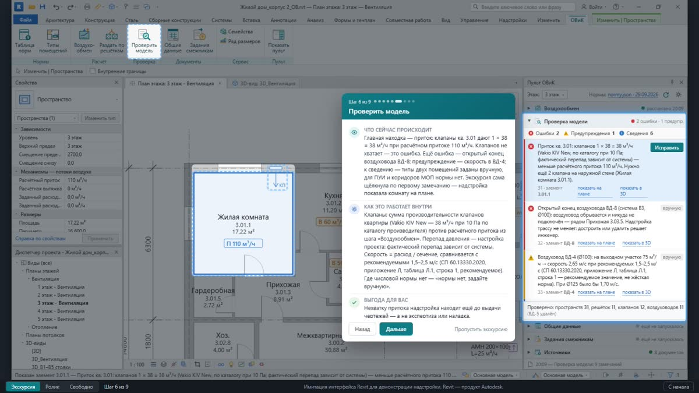
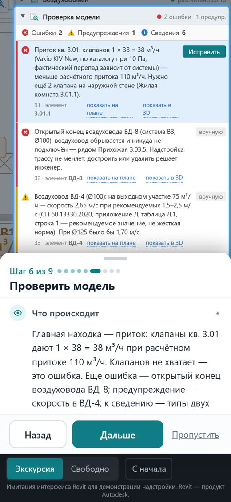
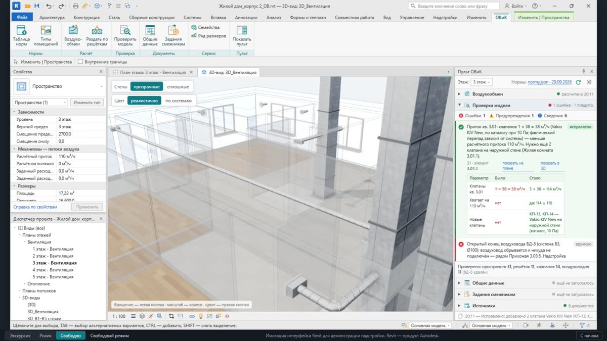

Интерактивная презентация
Окно Revit с демо-этажом жилого дома: экскурсия из 9 шагов, около 3 минут. Можно пройти по шагам или посмотреть самому. Работает и на телефоне.



Ролики
Ролики с озвучкой — на согласовании.
Появятся здесь: основной ролик (горизонтальный, 16:9) и короткий (вертикальный, 9:16, для телефона). Пока — интерактивная презентация выше.
Как работает пульт: семь шагов
- Типы помещенийПо именам помещений в модели пульт сам определяет тип — кухня, санузел, жилая комната; спорные показывает вам.
- ВоздухообменСчитает расход воздуха по каждому помещению и по квартире; у каждой цифры — документ и пункт нормы.
- Раздать по решёткамДелит расход между решётками помещения и проверяет каждую по каталогу производителя.
- Проверить модельНаходит нехватку притока, открытые концы воздуховодов, высокие скорости, помещения без нормы.
- Исправить одним нажатиемДобавляет недостающие клапаны и показывает «было/стало»; трассы и диаметры решаете вы.
- Общие данныеЗаполняет таблицу «Характеристика систем» и подбирает вентилятор по каталогу.
- Задания смежникамГотовит таблицу для электриков и отмечает, что изменилось с прошлой выдачи.
Что получает инженер
Надстройка не заменит инженера — она снимет рутину и покажет, откуда каждая норма и каждая цифра оборудования.
Быстрее
Воздухообмен этажа, проверка решёток по каталогу, общие данные и задание электрикам — из модели нажатием кнопки, и заново после каждой правки.
Качественнее
Проверка до выдачи: хватает ли клапанов на приток, открытые концы, скорости, помещения без нормы. Нехватку клапанов исправляет одним нажатием — с «было/стало».
Точнее
Каждая норма — с документом, редакцией и пунктом; оборудование — из каталогов производителей; толкования и допущения помечены. Таблица норм одна на все проекты.
Что нужно от инженера
- Проверить и подписать таблицу норм (она в приложениях ниже).
- Копия модели одного объекта.
- 4–8 часов вашего времени на пилот.
Как ставится на предприятии
Надстройка не серверная: она загружается внутрь Revit на том компьютере, где он запущен, и серверы моделей и лицензий не затрагивает. Если Revit у вас «стоит на сервере» или администратор строго ограничивает программы — на отдельной странице описано, где живёт надстройка в каждом варианте и где действительно нужен администратор.
Как пойдём
Пилот
1–2 недели оценка
Пакет из 6 инструментов
1,5–3 месяца оценка
Продукт
после пакета
Сроки — оценка, уточним после пилота.
Что измерим на пилоте
- Часы на раздел «Вентиляция» — до и после.
- Сколько ошибок найдено до выдачи.
- Замечания экспертизы по вентиляции.
- Расхождения спецификации и чертежей.
- Доля цифр со ссылкой на пункт нормы.
Проценты заранее не обещаем — только по замерам.